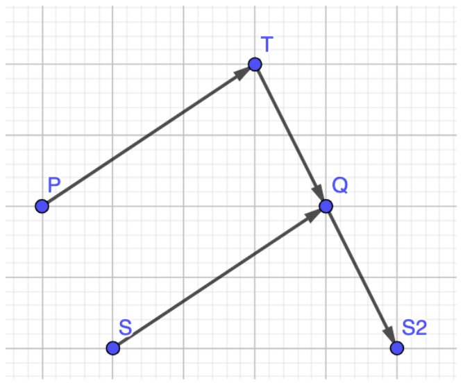
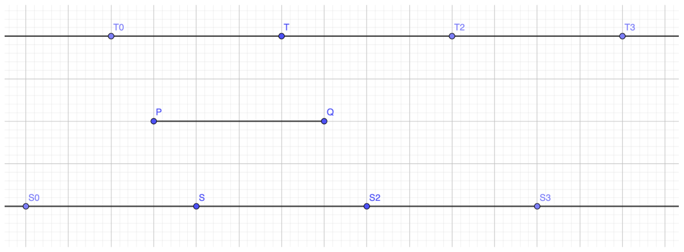
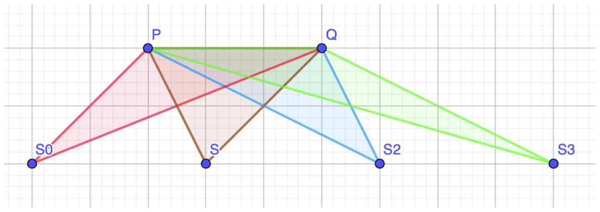
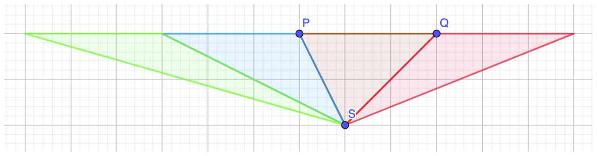
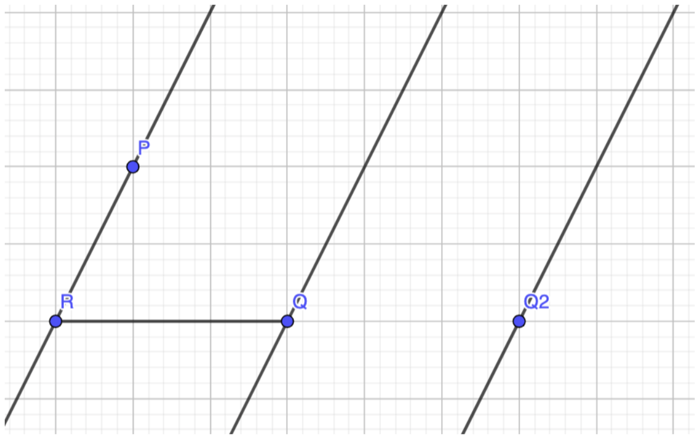

M Can You Reach There?
We can solve this problem by considering several cases:
- \(n = 1\),
- \(n = 2\),
- \(n \ge 3\) and not all marked points are on one line, and
- \(n \ge 3\) and all marked points are on one line.
M.1 \(n = 1\)
From the starting point \(S\) and a marked point \(P\), let \(R\) be the reflection of \(S\) with respect to \(P\). We can show that we can reach any point on the segment \(SR\).
M.2 \(n = 2\)
Let \(P\) and \(Q\) be the two marked points. Consider the illustration below:

We can move from \(S\) to \(T\) and from \(T\) to \(S_2\). We can prove that \(\overrightarrow{PQ} = \overrightarrow{SS_2}\), i.e. we can effectively translate any arbitrary point \(X\) with vector \(\overrightarrow{PQ}\). Similarly, we can also translate any arbitrary point \(X\) with vector \(\overrightarrow{QP}\).
Let’s consider the 2 lines: \(l_1\) which goes through \(T\) and parallel to the segment \(PQ\), and \(l_2\) which goes through \(S\) and parallel to the segment \(PQ\). On these two lines, we can visit all the points that that are translation of \(S\) (or \(T\)) by a multiple of vector \(\overrightarrow{PQ}\). It can be proven that no other points on \(l_1\) and \(l_2\) can be visited.

It is trivial to show that the points "outside" of the region between lines \(l_1\) and \(l_2\) cannot be reached. How about the points "inside" the region between lines \(l_1\) and \(l_2\)?

From point \(S_i\), we can visit all the points inside triangle \(S_iPQ\). We can also translate the points in each of the triangles \(S_iPQ\) by a multiple of vector \(\overrightarrow{PQ}\), more precisely, translate triangle \(S_iPQ\) by vector \(S_iS\):

From this, we can show that all the points between lines \(l_1\) and \(l_2\) (exclusive) are reachable.
Note that there is a corner case where \(S\) or \(T\) is on the line \(PQ\).
M.3 \(n \ge 3\)
When all marked points are collinear, we can solve it similarly to case \(n = 2\).
When not all marked points are collinear, let \(P\), \(Q\) and \(R\) be three non-collinear marked points:

From any starting point \(S\), we can reach point \(R\) (using marked point \(R\)). Let \(l_0\) be the line going through \(P\) and \(Q\), and \(l_1\) be the line going through \(Q\) and parallel with \(l_0\). Using marked points \(P\) and \(Q\), we can reach all points between lines \(l_0\) and \(l_1\), excluding line \(l_1\).
Let \(Q_2\) the translation of \(Q\) by vector \(\overrightarrow{RQ}\), and let \(l_2\) be the line going through \(Q_2\). Using marked points \(R\) and \(Q\), we can translate any point by vector \(\overrightarrow{RQ}\). Thus, we can reach all points between lines \(l_1\) and \(l_2\) (excluding line \(l_2\)).
Continue to apply the above translation, we can show that we can reach every point in the plane.